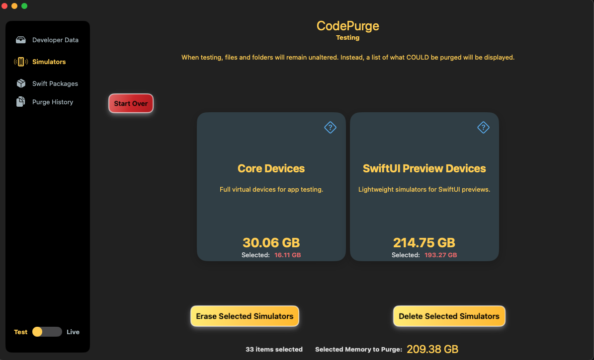
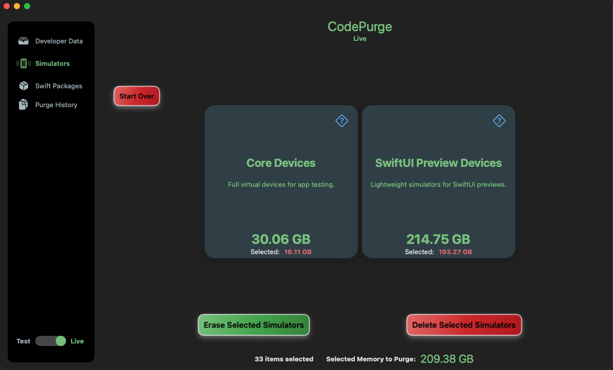
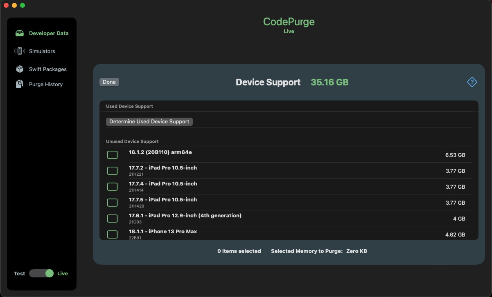
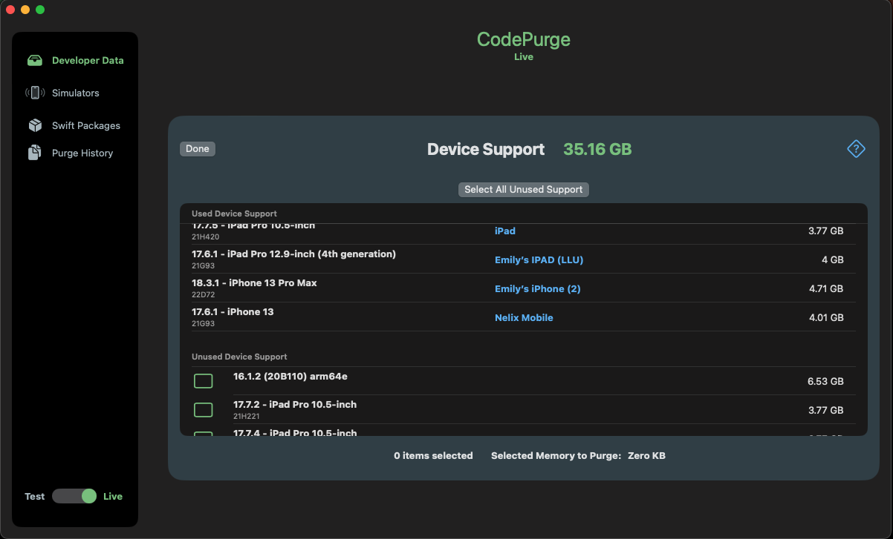

Take control of your Xcode environment with CodePurge.
CodePurge is a powerful tool designed to help developers optimize their Xcode workspace by managing and cleaning up unnecessary files. It offers features to:
- Identify and remove old archives, derived data, and documentation caches.
- Manage device support files, distinguishing between recently used and obsolete files.
- Handle simulators, including SwiftUI Preview simulators, which often consume excessive storage.
- Clean up the global Swift Package Manager cache, freeing up space from outdated repositories.
CodePurge is modular, consisting of a standalone app and two publicly available Swift packages:
- CodePurgeKit – Core library with shared data models, utilities, and UI components.
- CodePurgeDeveloperDataKit – Manages archives, derived data, device support, and documentation caches.
Features
Test Mode and Live Mode
CodePurge offers two modes of operation:
- Test Mode: Preview what would be deleted without making changes.
- Live Mode: Actively remove selected files to free up storage.

Test Mode: No files are deleted

Live Mode: Files are deleted
Device Support Management
Effortlessly manage outdated device support files:
- View a complete list of installed support files.
- Distinguish between recently used and unused files.

Complete list of iOS support files

Easily identify files that are no longer needed.
Simulator Management
Manage both core iOS simulators and SwiftUI Preview simulators, preventing them from consuming excessive disk space.
Swift Packages Cache Cleanup
Remove outdated Swift Package Manager repositories to optimize your development environment.
Who Should Use CodePurge?
- iOS Developers looking to maintain a clean development environment.
- Anyone using Xcode who wants to reclaim storage space.
Why Choose CodePurge?
- 💾 Save valuable disk space by removing unnecessary files.
- 🚀 Optimize your workflow without worrying about clutter.